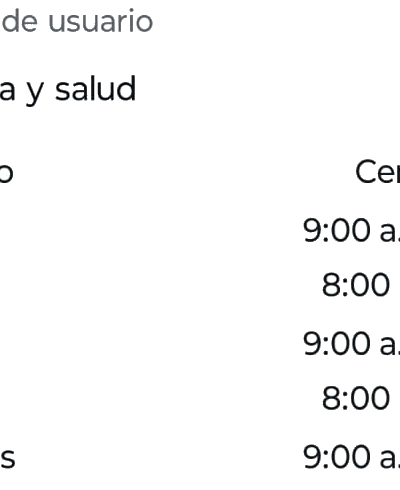
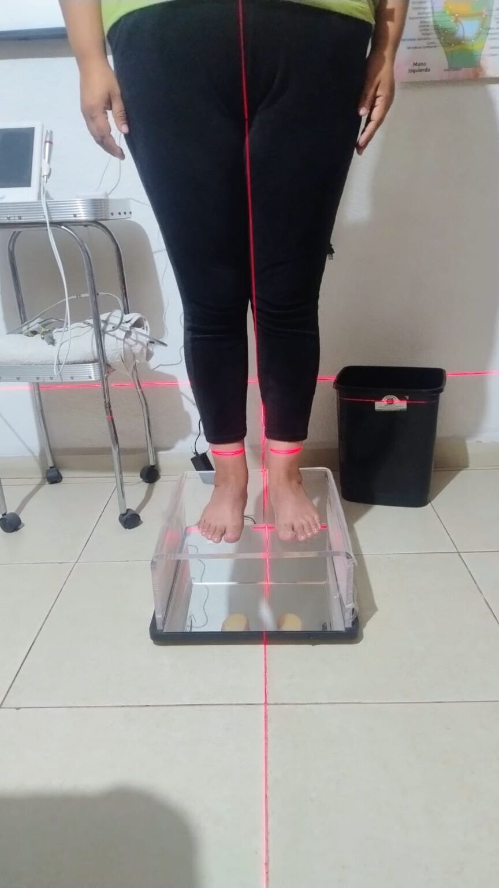
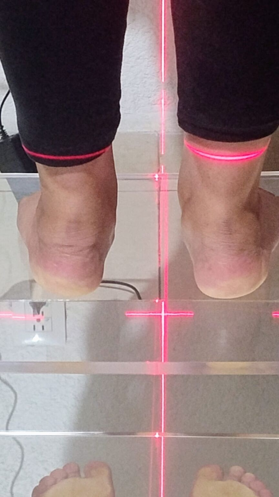

Enfoque integral
Dolor, función y prevención en un mismo plan. No tratamos un síntoma aislado: miramos cómo se mueve tu cuerpo completo.

Alineando tu bienestar…
Rehabilitación · Fisioterapia · Quiropráctica · Tultepec
Fisioterapia, quiropráctica, rehabilitación física y cámara hiperbárica en Tultepec. Un plan hecho a tu medida, con seguimiento real en cada sesión.
Por qué Fisioloh
Dolor, función y prevención en un mismo plan. No tratamos un síntoma aislado: miramos cómo se mueve tu cuerpo completo.
Objetivos claros, tiempos realistas y resultados medibles. Sabes qué vamos a lograr y cómo lo vamos a comprobar.
Ajustamos el protocolo según tu evolución. Nadie se queda solo a mitad del camino.
Nuestro servicio estrella
Sesiones guiadas en nuestra cámara hiperbárica, un apoyo complementario para procesos de recuperación y bienestar. Tu especialista valora tu caso y te explica con claridad si es una buena opción para ti.
Servicio complementario: no sustituye la valoración ni el tratamiento médico.
Servicios
Oxígeno a presión controlada como apoyo en tu recuperación.
Preguntar por este servicio →Manejo del dolor y recuperación funcional con técnicas basadas en evidencia.
Preguntar por este servicio →Alineación y movilidad articular con abordaje conservador.
Preguntar por este servicio →Fuerza, movilidad, estabilidad y retorno seguro a tus actividades.
Preguntar por este servicio →Recupérate de una lesión y vuelve a tu deporte con un plan de retorno seguro.
Preguntar por este servicio →Diagnóstico de tu pisada y plantillas ortopédicas hechas a tu medida.
Preguntar por este servicio →Apoyo al diagnóstico con tratamiento naturista complementario.
Preguntar por este servicio →Cuéntanos cómo te sientes y te orientamos hacia el plan que mejor se adapte a ti.
Estoy listo para empezar

Valoración de la pisada
Analizamos cómo pisas, cómo se reparte tu peso y cómo se alinean tus talones, rodillas y cadera. Con ese diagnóstico diseñamos plantillas ortopédicas a tu medida.
Diplomado en diagnóstico del pie para plantillas ortopédicas · 36 h
Método
Revisamos tu historial y hacemos pruebas funcionales para entender de dónde viene tu molestia.
Definimos objetivos, número de sesiones y métricas claras. Sabrás qué esperar y cuándo.
Terapia y educación del paciente: aprendes a cuidar tu cuerpo también fuera del consultorio.
Medimos tu avance y te damos un plan de mantenimiento para que los resultados se queden.
Quien te atiende
Terapia física y rehabilitación
Escuela de Entrenadores Físicos para la Salud (incorporada a la SEP, SISAE)
Quiropráctica
Escuela de Entrenadores Físicos para la Salud (incorporada a la SEP, SISAE)
Terapia física y rehabilitación
Registro profesional del especialista
Colegio Mexicano de Educadores Físicos
En instalaciones del Comité Olímpico Mexicano
Universidad Autónoma Chapingo
Formación en terapia manual y alineación
Universidad de Salud Natural Chapingo
Reg. SEP-DUP-DVC-042-2023
ESMEFYS Centro Universitario
Base de nuestra valoración de la pisada
RIAE / Instituto Cum Laude
Abordaje complementario de la rehabilitación
Datos tomados de las constancias y diplomas del especialista.
Dentro de Fisioloh
Horarios y ubicación
Contacto
Cuéntanos qué te duele, desde cuándo y qué te gustaría volver a hacer. Te respondemos por WhatsApp para agendar tu cita.